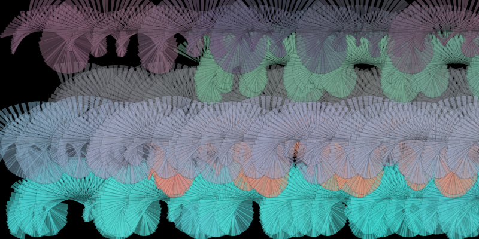

Vector field drawing

After I found out about Processing, I rapidly came across Daniel Shiffman's excellent videos. More precisely I find p5.js great because it makes it so easy to share your work. This drawing tool was a nice project to discover lots of features from Processing/p5.js.
About the project's content : some particles paint a canvas, guided by forces generated from Perlin Noise. The physics and colors are very customizable. I used Daniel Shiffman's code and continued from there.
Spinning shapes
This is at the beginning mostly something to have a second project, in order to make this page more useful. This is a p5.js project. Some colored shapes (right now just triangles) move and spin... there are many options.
Color gradient extraction
"Vector field drawing" taught me that color gradients can have a great influence on the "beauty" of randomly generated things. I had the idea of generating color gradients from pictures, and that's what this project is about. There are currently two applications of gradients : balls moving randomly while drawing and some effects on webcam captures.
Neural network driver
A little neural network that drives through checkpoints (the second checkpoint to take influences the driving line).
2D-Waves integration
Quick sketch mainly made by copying an old code I had written in OCaml.
Rocket optimization 1
Optimization of a rocket trajectory using an evolutionary algorithm.
Rocket optimization 2
Optimization of a rocket trajectory using simulated annealing.